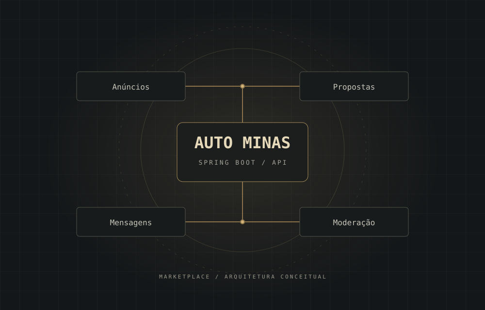

PROJETO EM DESTAQUEAuto Minas.
Um marketplace de veículos que nasceu na feira de tecnologia da escola. A API reúne anúncios com fotos, busca por localização, propostas, mensagens e moderação.
Backend em camadas, autenticação JWT, permissões com Spring Security e migrações de banco com Flyway.